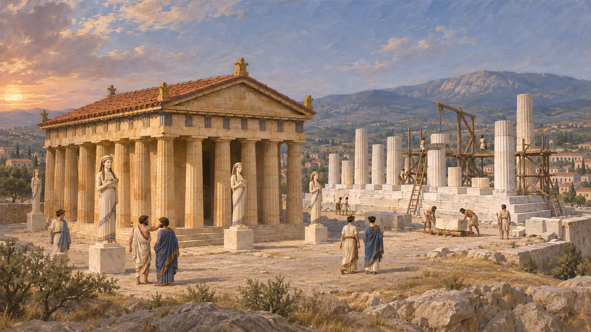
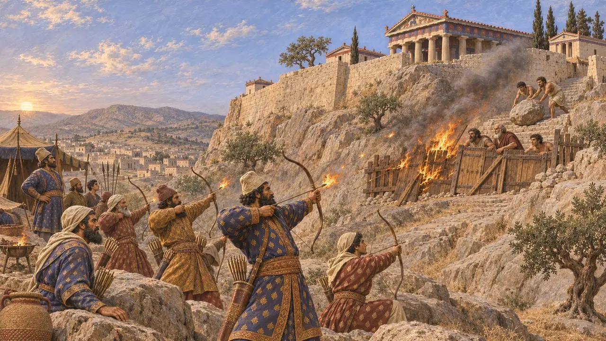
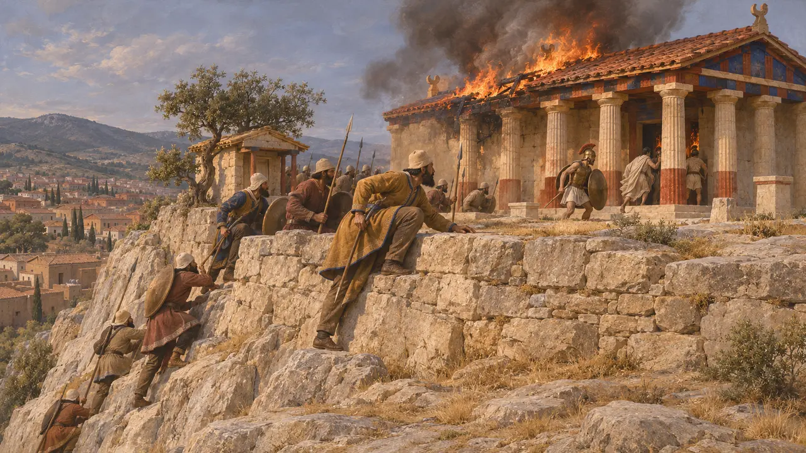
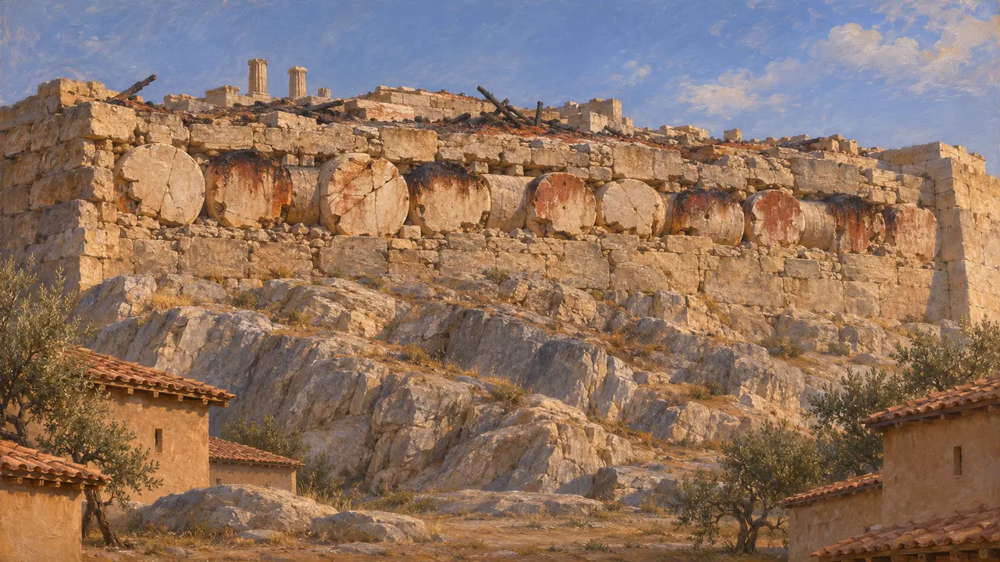
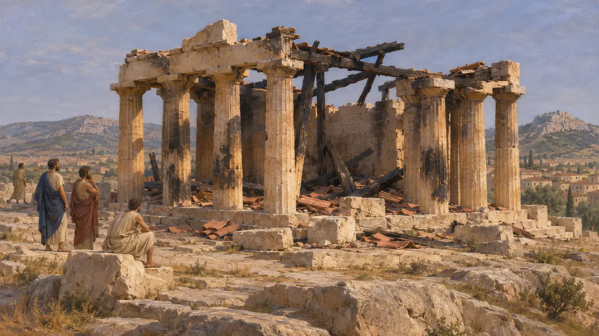

A Acrópole de Atenas
Cidadela e santuário de Atena em Atenas, tomada e incendiada por Xerxes em 480 AEC
No jogo: Nível 10: Os Portões Quentes
A Acrópole é a íngreme colina de calcário no coração de Atenas. Em 480 AEC, abrigava o antigo templo de Atena e um templo de mármore ainda em construção. No fim do verão de 480 AEC, o exército de Xerxes a tomou após um cerco e incendiou seus santuários, o que Heródoto apresenta como vingança pelo incêndio de Sardes. As ruínas moldaram a forma como os atenienses se lembraram da guerra e o que mais tarde construíram ali.
No jogo: O jogo apresenta a Acrópole como um campo de batalha tomado de assalto em 480 AEC, com o templo antigo de Atena, o Partenon Antigo e a barricada de madeira. Heródoto e as escavações confirmam esses elementos. Em 480 AEC, o Partenon Antigo ainda estava inacabado.

Templos sobre a rocha antes de 480 AEC
Nos registrosAs escavações mostram que, em 480 AEC, o cume abrigava um templo de calcário de Atena Políade. Suas fundações sobrevivem entre o Partenon posterior e o Erecteion, e muitas oferendas de mármore, como korai, ficavam ao seu redor. No lado sul, um novo templo de mármore, hoje chamado de Partenon Antigo, estava em construção, com as colunas apenas parcialmente erguidas. A maioria dos estudiosos situa seu início nos anos seguintes a Maratona.
Excavation reports; J. M. Hurwit, The Athenian Acropolis, 1999

O cerco à barricada
Relato antigoHeródoto conta que os atenienses haviam abandonado a cidade. Apenas alguns tesoureiros dos templos e homens pobres ficaram para trás, e interpretaram a muralha de madeira do oráculo como uma barricada de portas e vigas na Acrópole. Os persas acamparam no Areópago, em frente, e dispararam contra a barricada flechas envoltas em estopa em chamas. Os defensores recusaram os termos oferecidos por intermédio dos Pisistrátidas exilados e rolaram pedregulhos sobre os atacantes.
Herodotus 8.51-52

Captura e incêndio
Relato antigoPor fim, segundo Heródoto, alguns persas escalaram a encosta íngreme perto do santuário de Aglauro, onde não havia guarda. Alguns defensores se lançaram da muralha e outros fugiram para dentro do templo. Os persas os mataram, saquearam o santuário e incendiaram a Acrópole. Xerxes enviou um cavaleiro a Susa com a notícia e, no dia seguinte, ordenou aos exilados atenienses que o acompanhavam que subissem e fizessem sacrifícios à sua maneira.
Herodotus 8.53-54

O que os restos queimados revelam
Nos registrosAs escavações de 1885 a 1890 encontraram korai quebradas, bases com inscrições e fragmentos queimados enterrados em aterros no cume, por muito tempo chamados de entulho persa, embora os estudiosos hoje debatam quanto disso pertence a 480 AEC. Tambores de coluna do Partenon Antigo, rachados e avermelhados pelo fogo, foram depois incorporados à muralha norte da Acrópole. Ainda podem ser vistos ali a partir da cidade, lá embaixo.
P. Kavvadias and G. Kawerau, Die Ausgrabung der Akropolis, 1906; J. M. Hurwit, The Athenian Acropolis, 1999

Vingança, ruínas e o juramento
DisputadoHeródoto conta que os persas mais tarde usaram o incêndio de Sardes e de seu templo de Cibebe, em 498 AEC, como pretexto para queimar templos gregos. Autores posteriores disseram que os gregos juraram, antes de Plateia, deixar os templos queimados como memoriais, mas Teopompo chamou esse juramento de invenção ateniense. Os historiadores ainda discutem se as ruínas foram deixadas por voto ou por falta de recursos, e se parte do templo antigo continuou em uso depois de 480 AEC.
Herodotus 5.102; Lycurgus, Against Leocrates 81; Diodorus 11.29; Theopompus, FGrH 115 F153
Fontes
- Herodotus 5.102; 8.51-55
- J. M. Hurwit, The Athenian Acropolis, 1999
- P. Kavvadias and G. Kawerau, Die Ausgrabung der Akropolis vom Jahre 1885 bis zum Jahre 1890, 1906
- Lycurgus, Against Leocrates 81
- Diodorus 11.29
- Theopompus, FGrH 115 F153